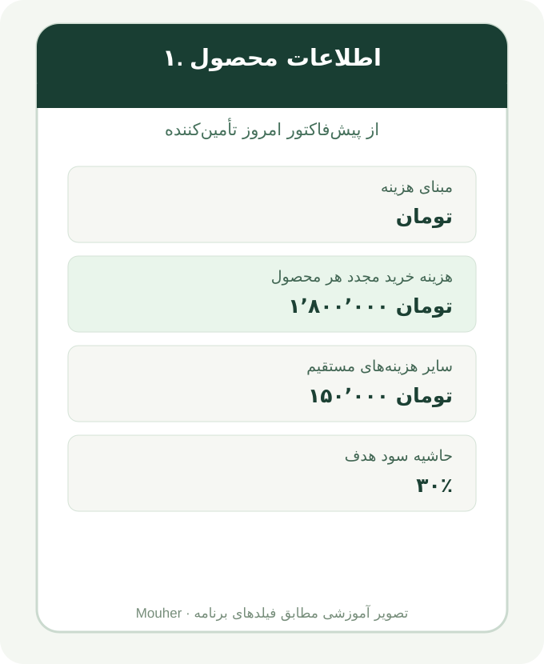

☰ راهنمای شروع سریع موهر
اول یک لباس را قیمتگذاری کن؛ بعد یاد بگیر چطور فروش با اسنپپی را ارزیابی کنی. هر موضوع فقط وقتی باز میشود که به آن نیاز داری.
🧭 راهنمای کامل چرخه کار موهر: از لباس تا قیمت سایت
موهر چه کاری انجام میدهد؟ برای لباسهای فروشگاه قیمت پیشنهادی حساب میکند، نسخههای قبلی محاسبات را نگه میدارد، به کمک تعداد فروش ثبتشده هزینه و درآمد را بررسی میکند و برای قیمت بعدی پیشنهاد میدهد. ثبت قیمت، به معنی فروش نیست؛ تأیید قیمت هم به معنی انتشار خودکار در سایت نیست.
«کالکشن» مثل پاییز ۱۴۰۵، «دسته» مثل پالتو، «نام محصول» مثل پالتو قهوهای و «کد کالا» مثل MH-01 را وارد کن. این سه سطح به اپ کمک میکند یک لباس را در چند گزارش دوباره نشمارد. عکس و کد کالا در فرم اختیاریاند، اما برای تاریخچه و فایل سایت، کد ثابت و یکتا بسیار مهم است.
مبنای هزینه را تومان یا دلار/تتر انتخاب کن. «هزینه خرید مجدد» یعنی امروز برای دوخت دوباره همان لباس چقدر لازم داری؛ «سایر هزینه مستقیم فروش» یعنی بستهبندی، ارسال و موارد مرتبط با هر سفارش. هیچ هزینهای را دوبار ننویس. حاشیه هدف را مثلاً ۳۰ وارد کن، نه ۰٫۳۰. آموزش تکتک کادرهای محصول.
اگر فقط نقدی میفروشی، «فروش اقساطی / اسنپپی را هم بررسی میکنم» را خاموش بگذار. بدون اطلاعات قرارداد هم قیمت نقدی محاسبه میشود. اگر اقساطی میفروشی، گزینه را روشن کن و کارمزد، مالیات کارمزد، زمان رسیدن پول، رشد فرضی هزینه و گردکردن را وارد کن. قیمت اقساطی «نظری» الزاماً قیمت مجاز برای درج در سایت نیست. فروش نقدی و مثال دقیق اقساطی.
برای همان پالتو: هزینه ساخت ۱٬۸۰۰٬۰۰۰ + هزینه فروش ۱۵۰٬۰۰۰ = ۱٬۹۵۰٬۰۰۰ تومان. با حاشیه ۳۰٪، قیمت پیش از گردکردن = ۱٬۹۵۰٬۰۰۰ ÷ ۰٫۷ = ۲٬۷۸۵٬۷۱۴٫۲۹، و با گردکردن دههزار به بالا ۲٬۷۹۰٬۰۰۰ تومان میشود. این عدد پیشنهاد نقدی است، نه تضمین فروش. قبل از ذخیره به هشدار فیلدهای ناقص نگاه کن. ذخیره محصول، نسخهای از محاسبه را در تاریخچه این مرورگر ثبت میکند.
محصول ذخیرهشده را جستجو، ویرایش یا حذف کن. اگر همان لباس دوباره قیمتگذاری شود، تاریخچه نسخهها برای تحلیل نگه داشته میشود. «دریافت CSV» برای فهرست قیمت است؛ «پشتیبان JSON» برای نگهداری یا بازیابی محصولات ذخیرهشده. بخش Google Drive و اشتراکگذاری نیازمند اقدام و دسترسی حساب خودت است. دادههای محلی دستگاههای مختلف خودکار با هم یکی نمیشوند. آموزش محصولات، فایلها و پشتیبان.
در تب «سود فروشگاه» به «پیشنهاد قیمت بعدی محصولات» برو و «دانلود نمونه CSV» را بزن. هر سطر نمونه، یک نسخه قیمت یک محصول در یک تاریخ است؛ نه یک محصول جدید. ستونهای هویت collection, category, sku, name، تاریخ date و ستونهای هزینه و حاشیه را مانند نمونه پر کن و فایل را وارد کن. برای فروش واقعی میتوانی sold_cash و sold_bnpl را نیز با تعداد صحیح پر کنی. ستونهای فروش خالی، به معنی فروشی که گزارش نشده هستند و نباید فروش واقعی تلقی شوند. فایل ناقص یا نامعتبر رد میشود؛ نمونه را مبنا قرار بده.
اگر همان فایل را دوباره وارد کنی، نسخههای واردشده با همان شناسه تکرار نمیشوند. واردکردن CSV جای ثبت هزینه امروز را نمیگیرد؛ برای قیمت فردا، هزینه تولید امروز را دوباره بررسی کن.
ماه گزارش را انتخاب کن و فقط تعداد لباسهایی که واقعاً فروختهای در نسخه مربوط و روش فروش مربوط وارد کن. اگر یک مدل با دو قیمت فروخته شده، تعداد فروش را بین نسخهها درست تقسیم کن؛ یک فروش را در دو ردیف ننویس. «هزینه ثابت ماه» مثل اجاره و قبوض را یک بار برای کل فروشگاه وارد کن، نه برای هر محصول.
اپ درآمد = تعداد × قیمت واحد، هزینه مستقیم = تعداد × هزینه مستقیم واحد، و هزینه کارمزد اقساطی را جدا حساب میکند. مانده تخمینی ماه برابر مجموع درآمد، منهای هزینههای مستقیم و کارمزدهای مدلشده و هزینه ثابت ماه است. این مانده لزوماً پول بانک یا سود خالص مالیاتی نیست؛ هزینههای جاافتاده، تخفیف، برگشتی و دیر رسیدن وجه ممکن است نتیجه را تغییر دهند.
نمایش را روی «محصول یکتا»، «دسته محصول» یا «کالکشن» بگذار. مثال: ده پالتوی MH-01 با قیمت ۲٬۷۹۰٬۰۰۰ و هزینه مستقیم ۱٬۹۵۰٬۰۰۰ میفروشی. درآمد = ۱۰ × ۲٬۷۹۰٬۰۰۰ = ۲۷٬۹۰۰٬۰۰۰، هزینه مستقیم = ۱۰ × ۱٬۹۵۰٬۰۰۰ = ۱۹٬۵۰۰٬۰۰۰ و مانده پیش از هزینه ثابت = ۸٬۴۰۰٬۰۰۰ تومان. این فروش در نمای محصول، دسته و کالکشن دیده میشود؛ سه فروش جدا نیست و در کل فروشگاه فقط یک بار حساب میشود. با هزینه ثابت ماه ۶٬۰۰۰٬۰۰۰، مانده تخمینی = ۲٬۴۰۰٬۰۰۰ تومان.
در بخش «پیشنهاد قیمت بعدی محصولات»، آخرین هزینه ذخیرهشده با نسخه قبلی مقایسه میشود. اگر چند نسخه قیمت داری، تغییر هزینه را نشان میدهد؛ اگر فقط یک نسخه داری، صریحاً میگوید سابقه قبلی وجود ندارد. میتوانی در کارت همان محصول «هزینه تولید امروز»، «سایر هزینه فروش»، «حاشیه هدف» و «گردکردن» را تغییر بدهی. پیشنهاد نقدی با هر تغییر دوباره محاسبه میشود. برای مثال با هزینه کل ۱٬۹۵۰٬۰۰۰ و حاشیه ۳۰٪ همان ۲٬۷۹۰٬۰۰۰ است؛ اگر هزینه یا حاشیه را عوض کنی، نتیجه عوض میشود.
حدود هوشمندی: تاریخچه و فروشهای ثبتشده برای مشاهده و مقایسهاند؛ تعداد فروش فعلاً به طور خودکار پیشبینی تقاضای آینده یا بهینهسازی آماری قیمت انجام نمیدهد. هزینه امروز و حاشیه انتخابی تو ورودی اصلی پیشنهاد هستند. آموزش پیشنهاد قیمت.
پیشنهاد هر محصول را بخوان و اگر موافقی «تأیید همین قیمت برای خروجی وبسایت» را بزن. تأیید در همین مرورگر ثبت میشود. سپس «دانلود فایل قیمتهای تأییدشده برای سایت» را بزن. تنها محصولات تأییدشده در CSV خروجیاند. خود سایت مشتری خودکار بهروز نمیشود؛ فایل باید جداگانه بررسی و از طریق ابزار مدیریت سایت یا فرایند انتشار آن اعمال شود. اگر پس از تأیید هزینه یا حاشیه را عوض کردی، تأیید قبلی خودبهخود با پیشنهاد تازه جایگزین نمیشود؛ دوباره بررسی و تأیید کن.
نرخ تورم عمومی سالانه ایران از فایل دادهای میآید که هنگام استقرار سایت بهروز میشود؛ به معنی تورم زنده پارچه نیست. «معادل ماهانه» از نرخ سالانه به صورت ریاضی محاسبه میشود. دکمه سناریو، فرض آزمایشی رشد هزینه را تغییر میدهد؛ با انتخاب «اعمال رشد انتخابی» این فرض به کادر رشد فرم اصلی منتقل میشود. برای ذخیره تغییر در یک محصول باید «ذخیره محصول» را هم بزنی. اولویت با تاریخچه هزینه واقعی تولید لباس خودت است. آموزش تورم.
🏷️ از تاریخچه محصول، قیمت جدید برای سایت پیشنهاد بگیر
فایل تاریخچه CSV باید با ساختار محصولات موهر باشد: هر سطر یک نسخه قیمت برای یک محصول در یک تاریخ. ستونهای اصلی: collection, category, sku, name, date, basis, cost, extra, margin, round. برای فروش واقعی، sold_cash و sold_bnpl را هم وارد کن؛ خالی یعنی فروش ثبتنشده، نه فروش واقعی صفر. از دکمه «دانلود نمونه CSV» استفاده کن و ستونها را عوض نکن.
بعد از واردکردن فایل، در بخش «پیشنهاد قیمت بعدی محصولات» برای هر لباس میتوانی هزینه تولید امروز، هزینه فروش، حاشیه سود هدف و گردکردن قیمت را جدا تغییر بدهی. هر تغییر پیشنهاد را دوباره حساب میکند. فقط بعد از تأیید قیمت، آن محصول وارد فایل قیمتهای تأییدشده وبسایت میشود؛ هیچ قیمت خودکار منتشر نمیشود.
در گزارش فروشگاه، هزینه و درآمد فقط برای تعداد فروش ثبتشده محاسبه میشوند. چند نسخه قیمت از یک محصول، محصول جدید نیست؛ جمع کالکشن و دسته از همان فروشهای یکتا محاسبه میشود. قیمتگذاری پیشنهادی از هزینههای ثبتشده و ورودیهای جدید استفاده میکند، نه یک پیشبینی تضمینی بازار.
برای هر کالکشن ← دسته ← محصول یکتا قیمتهای ذخیرهشده کنار هم دیده میشوند. یک محصول با چند نسخه قیمت چند محصول جدا نیست.
🏪 سود فروشگاه از صفر: کالکشن، دسته، محصول
هر مدل لباس یک جای مشخص دارد: کالکشن ← دسته ← محصول یکتا. مثلاً «پاییز ۱۴۰۵ ← پالتو ← پالتو قهوهای MH-01». قیمت یک مدل ممکن است چند بار تغییر کند، اما هنوز یک محصول است.
📋 آموزش کامل بخش ۱: مشخصات و هزینه لباس
این بخش را برای یک مدل و سایز مشخص پر کن. هر مقدار را از هزینه واقعی تولید و فروش همان لباس بگیر.
MH-COAT-BR-M استفاده کن. ذخیره دوباره محصول با همین کد، پس از تأیید، رکورد قبلی را جایگزین میکند.💵 فقط فروش نقدی دارم؛ چه کنم؟
اگر با اسنپپی یا فروش اقساطی کار نمیکنی، در بخش «۲. روش فروش» تیک «فروش اقساطی / اسنپپی را هم بررسی میکنم» را خاموش بگذار. هیچ کارمزد، مالیات کارمزد، زمان تسویه یا رشد ماهانه برای قیمتگذاری نقدی لازم نیست.
در حالت فقط نقدی، «مشارکت اقتصادی» در قیمت پیشنهادی برابر است با ۲٬۷۹۰٬۰۰۰ − ۱٬۹۵۰٬۰۰۰ = ۸۴۰٬۰۰۰ تومان پیش از هزینههای ثابت و هزینههای واردنشده. قیمت اقساطی نظری و جدول تسویه مخفی میمانند.
اگر بعداً اسنپپی فعال شد، تیک را روشن کن و قرارداد واقعی را وارد کن. برای محصول قبلی، پس از تغییر روش فروش دوباره ذخیره کن.
🧾 حسابوکتاب یک پالتو: هر تومان از کجا آمده؟
این فصل فقط برای وقتی است که گزینه فروش اقساطی را روشن کردهای. اگر فقط نقدی میفروشی، راهنمای فروش نقدی را بخوان.
در تمام این درس فقط یک پالتوی موهر را حساب میکنیم. عددی از فروش دیگری قاطی این مثال نمیکنیم. همه مبلغها تومان هستند.
هزینه ساخت پالتو: ۱٬۸۰۰٬۰۰۰؛ بستهبندی و هزینه مستقیم فروش: ۱۵۰٬۰۰۰؛ حاشیه سود دلخواه: ۳۰٪؛ کارمزد اسنپپی: ۱۳٪؛ مالیات فرضی کارمزد: ۱۰٪؛ مالیات قابل بازیافت: تیک خاموش؛ واریز پول: ۲ ماه بعد؛ رشد فرضی هزینه ساخت: ۷٪ در هر ماه؛ گردکردن به بالا: ۱۰٬۰۰۰؛ قیمت فعلی: خالی.
۱۳٪ کارمزد و دو ماه تسویه، اطلاعات سناریوی موهر هستند؛ ۱۰٪ مالیات، ۷٪ رشد و ۳۰٪ حاشیه فرضهای آموزشیاند.
۱٬۸۰۰٬۰۰۰ هزینه ساخت + ۱۵۰٬۰۰۰ هزینه فروش = ۱٬۹۵۰٬۰۰۰. این عدد از جمع دو کادر اول به دست میآید؛ هزینه جدیدی از طرف برنامه نیست.
میخواهیم هزینهها حدود ۷۰٪ قیمت فروش باشند تا حدود ۳۰٪ برای پوشش سود هدف بماند. پس ۱٬۹۵۰٬۰۰۰ ÷ ۰٫۷۰ = ۲٬۷۸۵٬۷۱۴٫۲۹. چون گام گردکردن ۱۰٬۰۰۰ است، برنامه عدد را رو به بالا گرد میکند: ۲٬۷۹۰٬۰۰۰.
از فروش ۲٬۷۹۰٬۰۰۰ تومان، اسنپپی طبق کارمزد ۱۳٪ این مقدار را کسر میکند: ۲٬۷۹۰٬۰۰۰ × ۱۳ ÷ ۱۰۰ = ۳۶۲٬۷۰۰ تومان. در کادر «کارمزد پذیرنده» فقط ۱۳ را وارد کن.
برای تمرین فرض میکنیم مالیات ۱۰٪ کارمزد باشد. یعنی ده تومان از هر صد تومان کارمزد، نه ده درصد کل قیمت پالتو.
۳۶۲٬۷۰۰ × ۱۰ ÷ ۱۰۰ = ۳۶٬۲۷۰ تومان مالیات فرضی. کارمزد ۳۶۲٬۷۰۰ + مالیات ۳۶٬۲۷۰ = ۳۹۸٬۹۷۰ تومان جمع کسورات.
چطور ۱۰٪ واقعی را پیدا کنم؟ در گزارش تسویه دنبال دو مبلغ «کارمزد بدون مالیات» و «مالیات کارمزد» بگرد. مبلغ مالیات ÷ مبلغ کارمزد × ۱۰۰ = درصد مالیات. اگر فقط یک مبلغ کلی نوشته شده، از پشتیبانی پذیرندگان اسنپپی تفکیک بخواه؛ عدد را حدس نزن. ۱۰٪ این درس فقط فرض است.
در مثال ما تیک خاموش است؛ یعنی برنامه همان ۳۶٬۲۷۰ تومان مالیات را هم جزو کسورات حساب میکند. اگر تیک روشن باشد، برنامه فرض میکند تمام مالیات کارمزد اعتبار مالیاتی قابل استفاده است و این مبلغ را از کسورات اقتصادی حذف میکند؛ اسنپپی پول اضافهای خودکار واریز نمیکند.
اگر مطمئن نیستی یا سند نداری، تیک را خاموش بگذار. این فقط یک انتخاب محتاطانه برای قیمتگذاری است، نه تشخیص وضعیت قانونی مالیاتی.
۲٬۷۹۰٬۰۰۰ − ۳۶۲٬۷۰۰ − ۳۶٬۲۷۰ = ۲٬۳۹۱٬۰۳۰ تومان. این همان دریافتی اسمی است؛ یعنی مبلغی که در مدل، بعد از کسورات و قبل از درنظرگرفتن تأخیر میماند.
در مثال موهر تمام ۲٬۳۹۱٬۰۳۰ تومان دو ماه بعد به حساب فروشگاه میرسد. این زمان واریز به موهر است، نه قسطهای مشتری. در فیلد تسویه گزینه «تمام مبلغ پس از ۲ ماه» را انتخاب کن.
فرض کردهایم هزینه ساخت هر ماه ۷٪ بیشتر میشود. بنابراین ۱٫۰۷ × ۱٫۰۷ = ۱٫۱۴۴۹، و برنامه برای مقایسه قدرت خرید، ۲٬۳۹۱٬۰۳۰ را بر ۱٫۱۴۴۹ تقسیم میکند: ۲٬۰۸۸٬۴۱۸٫۲۰ تومان، که روی صفحه ۲٬۰۸۸٬۴۱۸ دیده میشود.
خیلی مهم: بانک ۲٬۰۸۸٬۴۱۸ واریز نمیکند؛ واریز اسمی ۲٬۳۹۱٬۰۳۰ است. عدد کوچکتر فقط ارزش اقتصادی امروز با فرض رشد ۷٪ است. اگر هزینه تولید هر ماه رشد نکند، نتیجه متفاوت میشود.
از ارزش اقتصادی پول دریافتی، هزینه همین پالتو را کم میکنیم: ۲٬۰۸۸٬۴۱۸٫۲۰ − ۱٬۹۵۰٬۰۰۰ = ۱۳۸٬۴۱۸٫۲۰ تومان. برنامه عدد گردشده ۱۳۸٬۴۱۸ را نشان میدهد.
این عدد پول واریزی نیست و سود خالص هم نیست؛ یک شاخص مقایسهای پس از هزینههای مستقیم و اثر دیر رسیدن پول است. اجاره، حقوق ثابت، مالیاتهای دیگر و هزینههای واردنشده ممکن است از آن کم شوند.
این بار میخواهیم پس از کسر کارمزد و دیر رسیدن پول، همان هدف حاشیه ۳۰٪ را از دید مدل حفظ کنیم.
اول قیمت نقدی قبل از گردکردن را برمیداریم: ۲٬۷۸۵٬۷۱۴٫۲۹. از هر ۱ تومان فروش، بعد از کارمزد و مالیات فرضی، ۰٫۸۵۷ تومان میماند (۱ − ۰٫۱۳ × ۱٫۱۰ = ۰٫۸۵۷). سپس اثر دو ماه را هم حساب میکنیم:
۲٬۷۸۵٬۷۱۴٫۲۹ ÷ ۰٫۸۵۷ × ۱٫۱۴۴۹ ≈ ۳٬۷۲۱٬۵۴۵ تومان. با گردکردن رو به بالای ۱۰٬۰۰۰ تومانی، ۳٬۷۳۰٬۰۰۰ تومان میشود.
این قیمت فقط مقایسه اقتصادی نظری است؛ ممکن است قرارداد اجازه قیمت جداگانه برای مشتری اسنپپی ندهد. برای تصمیم واقعی، «قیمت فعلی فروشگاه» را وارد کن و عدد مرحله ۹ را بسنج.
وقتی عددی مثل ۲٬۷۸۵٬۷۱۴ داریم، با گردکردن به بالا در گام ۱۰٬۰۰۰، به ۲٬۷۹۰٬۰۰۰ میرسیم. گام ۵۰٬۰۰۰ همین عدد را ۲٬۸۰۰٬۰۰۰ میکند. انتخاب خودت است.
اگر واقعاً روی برچسب پالتو ۲٬۷۹۰٬۰۰۰ نوشتهای، همین را وارد کن. اگر خالی بگذاری، برنامه برای محاسبه مشارکت اقتصادی از قیمت نقدی پیشنهادی خودش استفاده میکند. اگر قیمت دیگری وارد کنی، مراحل ۳ تا ۹ با قیمت جدید دوباره محاسبه میشوند.
📈 آموزش کامل: تحلیل تورم و سناریوی قیمت پوشاک
این قسمت یک مرجع آماری را کنار فرضهای شخصی تولیدکننده نشان میدهد. عدد بانک جهانی مربوط به تورم عمومی سالانه است، نه تورم زنده ماهانه پارچه و دوخت.
👗 آموزش کامل «محصولات من»: جستجو، ویرایش و ذخیره
MH-COAT. جستجو فقط محصولات ذخیرهشده همین مرورگر را فیلتر میکند.Mouher؛ برای نامگذاری فایلها و پوشههای خروجی Google Drive استفاده میشود.۱. از کجا شروع کنم؟ قیمتگذاری اولین پالتو
برای شروع تنها سه چیز لازم داری: هزینه تولید دوباره یک لباس، هزینه مستقیم فروش آن، و حاشیه سود هدف خودت.

تصویر قدیمی آموزشی است و اعدادش ممکن است با تمرین پالتو متفاوت باشد. اعداد تمرین بالا را در فرم وارد کن.
به محاسبهگر برو ←۲. حاشیه سود یعنی چه و چقدر انتخاب کنم؟
اگر هدف ۳۰٪ باشد، یعنی میخواهی حدود ۳۰٪ قیمت فروش پس از کسر هزینههای مستقیم باقی بماند؛ نه اینکه فقط ۳۰٪ به هزینه اضافه کنی.
حدود ۸۴۰ هزار تومان تفاوت است، اما این هنوز سود خالص بعد از اجاره، حقوق ثابت و مالیاتهای دیگر نیست.
نمایش فرمول (اختیاری)
1,950,000 ÷ (1 − 0.30) = 2,785,714 → 2,790,000
۳. فروش اقساطی اسنپپی؛ آیا این قیمت برای من میصرفد؟
اول تفاوت را بدان: اقساط مشتری با زمان واریز پول به فروشگاه یکی نیست. در مثال موهر، کارمزد پذیرنده ۱۳٪ و تسویه با فروشگاه پس از دو ماه است.
تصمیم عملی: قیمت واقعی موردنظرت را در فیلد «قیمت فعلی» تغییر بده. به جای خیرهشدن به عدد «نظری اقساطی»، ببین «مشارکت اقتصادی» برای تو قابل قبول است یا نه.
نمایش محاسبات دقیق (اختیاری)
Retention = 1 − (0.13 × 1.10) = 0.857
PV at 2 months = 2,790,000 × 0.857 ÷ (1.07²) ≈ 2,088,418
Contribution = 2,088,418 − 1,950,000 ≈ 138,418
Theoretical installment = round up [(1,950,000 / 0.70) / 0.857 × 1.07²] = 3,730,000
۴. از تورم و تغییر هزینه تولید چطور استفاده کنم؟
اولویت با افزایش هزینه واقعی تولید همان لباس است؛ شاخص تورم عمومی لزوماً نماینده تغییر پارچه و دوخت نیست. داده سالانه بانک جهانی در اپ فقط مرجع است، نه نرخ زنده ماهانه پوشاک.
رشد کل: — | رشد مرکب ماهانه: —
عدد محاسبهشده تاریخچه است، نه پیشبینی. این مقدار خودکار به فرم قیمتگذاری منتقل نمیشود.
۵. چطور استراتژی قیمتگذاری مناسب برند خودم بسازم؟
موهر هیچ حاشیه سود یا نرخ رشد ثابتی را به همه تحمیل نمیکند. مثال پالتو برای آموزش است؛ هر تولیدکننده دادهها و هدف خودش را دارد.
فرم فعلی پارچه، دوخت و خرجکار را جدا ذخیره نمیکند؛ هزینه تولید هر لباس را پیش از ورود جمع کن. برای ترکیب هزینه ارزی پارچه و دستمزد تومانی، همه را ابتدا به تومان تبدیل کن.
۶. ذخیره محصول، پشتیبانگیری و نصب روی آیفون
برای هر مدل جدید این مسیر کوتاه را تکرار کن: هزینه بهروز → حاشیه هدف → بررسی اسنپپی → تأیید قیمت مناسب → ذخیره و بازبینی.